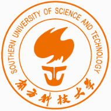

01 / SELECTED RESEARCH
研究成果.
从生成式视觉到多模态理解，围绕跨模态对齐、工具辅助推理与高效推理展开研究。
VG-Refiner
Towards Tool-Refined Referring Grounded Reasoning via Agentic Reinforcement Learning
工具精化的视觉指代定位推理。通过 Agentic RL 驱动多轮工具调用与自我修正，探索视觉工具辅助的定位与推理。
InstaRevive
One-Step Image Enhancement via Dynamic Score Matching
基于 Rectified Flow 与动态分数匹配蒸馏，利用扩散生成先验实现一步图像恢复，统一处理去噪、去雾、去模糊、去雨与低光增强。
Thinking With Bounding Boxes
Enhancing Spatio-Temporal Video Grounding via Reinforcement Fine-Tuning
以边界框思维链开展显式时空推理，借助强化微调提升视频中的时空联合定位精度。
MDSL
Modality-Decoupled Synergistic Learning for Open-Vocabulary Audio-Visual Event Localization
将开放词汇事件定位解耦为开放集分类与多模态一致性检测，通过模态解耦协同学习缓解视音模态的耦合优化瓶颈。
OmniPace
Depth-Aligned Audio-Visual Token Compression for Omni-Modal LLMs
面向全模态大模型的深度对齐视听 Token 压缩，结合统计离群语义边界切分与层级化自适应剪枝，提高视频理解推理效率。
FoodMonitor
Benchmarking MLLMs for Explainable Compliance Analysis
面向食品安全场景构建可解释合规分析基准，评估多模态大模型的场景理解与合规分析能力。
Content-Preserving Diffusion Model
Content-Preserving Diffusion Model for Unsupervised AS-OCT Image Despeckling
面向眼科 AS-OCT 图像，探索扩散模型无监督去噪，通过马尔可夫逆采样与噪声统计建模，在去除散斑噪声的同时保留细微解剖结构。
02 / INDUSTRY EXPERIENCE
在真实场景中实践.
直播内容理解、语音助手、机器人交互与自动驾驶感知，积累覆盖数据、训练、评测和部署的端到端经验。
字节跳动 至今
抖音直播 · 多模态内容理解 · 暑期实习
构建直播场景的多模态理解基座
参与 LiveVLM 基座研发，覆盖切片 Caption、主播画像、评论与 ASR 理解、高光片段提取；围绕结构化数据质量、模型规模选择与蒸馏效率推进迭代。
4B 模型结构化 Caption macro-F1 84.6%、判定正确率 88.8%，效果与 9B 持平；数据管线稳定支撑百万级高质量 SFT 数据生产。
技术路径与个人贡献
模型与评测
基于 Qwen3.5 验证 2B / 4B / 9B 多档规模，构建 token-F1、ROUGE、BLEU、VLM-as-judge 与 MCQ 多维评测，兼顾生成质量、结构化字段准确性与任务理解能力。
数据与幻觉治理
独立设计含 7 项基础字段与 game、PK、才艺、虚拟主播 4 类垂类扩展的层级化 Schema。通过异构模型双路生成与交叉互检、图像锚定裁判、Keyphrase 抽取并集重构，配合规则过滤与去重清洗，显著降低原约 10% 的标注幻觉率。
MOPD 蒸馏
参与 Teacher 的 CPT → SFT → RL 全链路。以 JSD / Reverse-KL 为损失，用学生自生成序列结合教师 Token 级反馈缓解 exposure bias；验证“强 Teacher + 预热 Student + 高 λ on-policy”范式，在主播画像描述任务中逼近教师上限，计算效率显著优于 RL。
腾讯
CSIG · 元宝产品部 · 多模态技术中心 · 暑期实习
TeaChat V2：从语音理解到交互与工具调用
基于 Qwen3-30B-A3B 与 MoE Conformer V2，参与预训练、Continued Training 与 SFT 全链路，支撑 ASR、语音对话和工具调用。
在 2700+ 现网评测集上持续迭代，ASR 坏例率由 25.2% 降至 23.2%；支撑 28 机集群高效稳定训练。
技术路径与个人贡献
多任务数据与 CoT
统一组织 6+ 类音文交错样本，构建覆盖 14 类工具的百万级工具调用数据。经 6 维多模型 CoT 打分择优选用胜出率 74% 的数据源，并通过线上 Bad Case 回流修复主需求理解、多轮记忆等问题。
分布式训练
基于 Megatron-LM 落地 TP / PP / EP / CP 四维混合并行；针对 MoE 专家路由负载不均设计 EP 通信与显存均衡策略，结合序列并行、梯度检查点与 ZeRO 优化器状态切分降低单卡显存峰值。
渐进式蒸馏与评测
实现 T2TS → S2TS 渐进式蒸馏，系统性解决长上下文显存溢出、多机通信瓶颈与训练稳定性问题。搭建覆盖 3 大任务、11 大领域的人工 GSB 与自动评测体系，支撑版本效果对比与迭代验证。
小鹏机器人中心
多模态智能部 · 端到端全双工大模型 · 科研实习生
面向人形机器人 IRON 的自然全双工交互
面向小鹏 R02 量产人形机器人，基于 Qwen3-Omni Thinker–Talker MoE 架构设计并迭代人机交互模型，覆盖数据构建、训练、评测与真机 MVP 联调。
打断 / 续说预测准确率 超过 98%，通用 Benchmark 与原模型持平；管线覆盖 14+ 类训练数据及 11 个语音 Benchmark。
技术路径与个人贡献
配置化数据闭环
将人设、RAG、动作与意图识别、情绪理解、记忆增强等模块解耦为可配置流水线，协同搭建基于 VLMEvalKit 的评测体系，实现“生成 → 训练 → 评测 → Bad Case 回流”闭环。
全双工鲁棒性
设计全双工数据格式与控制 Token 体系，建模流式听说切换、实时打断与续说生成；统一前景与背景人声、环境噪声和混响加噪，支持 32 种音色注册，缩小加噪与纯净场景的性能差距。
SFT 与 GRPO
基于 ms-swift 完成 Qwen3-Omni 多机多卡 SFT 与 GRPO，处理 MoE + LoRA 梯度检查点、长窗口训练和显存峰值溢出等问题；通过多维定制 GRPO 奖励优化交互状态预测。
百度
智能驾驶主线研发组 · 点云语义分割 · 算法实习生
从 LiDAR 点云到自动驾驶感知落地
负责占据栅格（OGM）真值自动化生产，通过多帧 LiDAR 时序聚合与动静分离构建高质量标注。基于 SphereFormer 的径向窗口注意力增强稀疏远距离点特征，针对长尾分布调整采样与损失加权。
成果部署于 Apollo ANP3.0 平台，并实装于“萝卜快跑”无人车队。
03 / ACADEMIC JOURNEY
学术背景.
 硕士在读
硕士在读清华大学
TSINGHUA UNIVERSITY
国家“双一流”建设高校，以理工科优势与跨学科研究见长。
深圳国际研究生院
数据科学与信息技术
推免录取排名 3 / 41

工学学士南方科技大学
SOUTHERN UNIVERSITY OF SCIENCE AND TECHNOLOGY
扎根深圳的国家“双一流”建设高校，注重科研创新与国际化人才培养。
计算机科学与工程系
智能科学与技术
GPA 3.8 / 4.0专业排名 1 / 28
导师：刘江教授 ↗ · 2024 届优秀毕业生
山东省烟台一中
YANTAI NO.1 MIDDLE SCHOOL OF SHANDONG
创办于 1931 年，山东省首批规范化学校。
普通高中
山东 · 烟台
高考总分 645 分数学 138 分
核心课程与成绩
研究历程 RESEARCH JOURNEY
视听学习与模态对齐
清华大学 · Intelligent Vision Group · 硕士研究
研究开放词汇音视频事件定位与全模态 Token 压缩，探索模态解耦、语义边界检测和层级化剪枝，兼顾理解能力与推理效率。
高效图像生成与恢复
清华大学 · Intelligent Vision Group · 保研阶段
通过 Rectified Flow、扩散生成先验与动态噪声控制的分数匹配蒸馏实现快速高保真恢复，相关工作 InstaRevive 发表于 ICLR 2025。
医学影像生成与无监督去噪
南方科技大学 · iMED 实验室 · 本科研究
针对 AS-OCT 图像研究扩散模型无监督去噪，在噪声去除与解剖结构保真之间寻求平衡，相关工作发表于 MICCAI 2023。
TEACHING
在教学中交流与成长
清华大学《深度学习前沿》《强化学习》课程助教2025 秋 / 2026 春
南方科技大学《数据库原理》《智能机器人》课程助教2022 夏 / 2023 秋
EXCHANGE & ACTIVITIES
课堂之外
新加坡国立大学“视频流媒体与 AI”暑期交流2022 春—夏 · 项目金奖
清华大学第十五届“领客计划”主持人大赛2024 · 三等奖
04 / TOOLKIT & RECOGNITION
能力与荣誉.
多模态数据与评测闭环
图像、视频、语音与文本数据构建及清洗；大规模语料合成、质量治理、多维评测和 Bad Case 回流。
后训练、蒸馏与分布式优化
CPT / CT / SFT、GRPO 与模型蒸馏；多机集群训练，以及 MoE 场景下的显存、通信与负载均衡优化。
多模态理解与生成
视觉指代推理、时空视频定位、音视频事件理解、全双工语音交互，以及扩散模型和图像恢复。
- 深度学习
- PyTorch · TensorFlow · Megatron-LM · DeepSpeed · ms-swift
- 编程语言
- Python · C++ · Java · SQL · C# · JavaScript
- 工程工具
- CUDA · Git · Docker · Linux Shell · Conda · LaTeX · Unity
- 语言能力
- 中文（母语） · 英语（流利，IELTS 6.5）